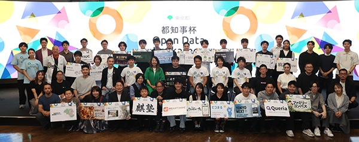

受賞・選出
作品
東京RPG
東京を訪れる外国人旅行者向けの観光アプリです。東京都のオープンデータから場所と時間帯ごとの混み具合を推定し、空いている場所を訪ねるとゲーム内で多くの経験値がもらえるようにしました。
行きたい場所、移動時間、混み具合をもとにルートを提案します。雨が降ったら、屋内の候補を入れて組み直せます。
- 地図
- Leaflet、OpenStreetMap
- 配信・データベース
- Cloudflare Workers、D1
- 天気・生成AI
- Open-Meteo、Cloudflare Workers AI（物語生成・翻訳）
Astera
東京23区で月や星を見られる場所を探すiPhoneアプリです。日時と天体を選ぶと、建物で天体が隠れるか、雲や街明かりはどうか、夜に入れる場所かを候補地ごとに確認できます。
渋谷駅前では、同じ時刻でも地上と展望台で月の見え方が違います。PLATEAUの3D都市モデルを使い、それぞれの目線の高さから建物と月の位置関係を確かめられるようにしました。
SwiftUI・RealityKit・Project PLATEAU
デモ動画を見る 1分58秒
矢上祭のシフト管理アプリ
矢上祭の実行委員が、スマホで自分の担当や集合場所、当日の予定を確かめるためのアプリです。運営側がGoogleスプレッドシートのシフト表を直すと、アプリの表示も更新されます。
Next.js・Google Sheets API・PWA
ロボットの屋外自己位置推定
四足ロボットGo2Wで、GNSSの測位結果を手がかりに、LiDARの点群地図上で出発位置を特定する方法を試しました。走行ログを見ると、停止中は姿勢のずれが増えず、走った距離に応じてずれが大きくなりました。
ROS 2・GNSS・LiDAR